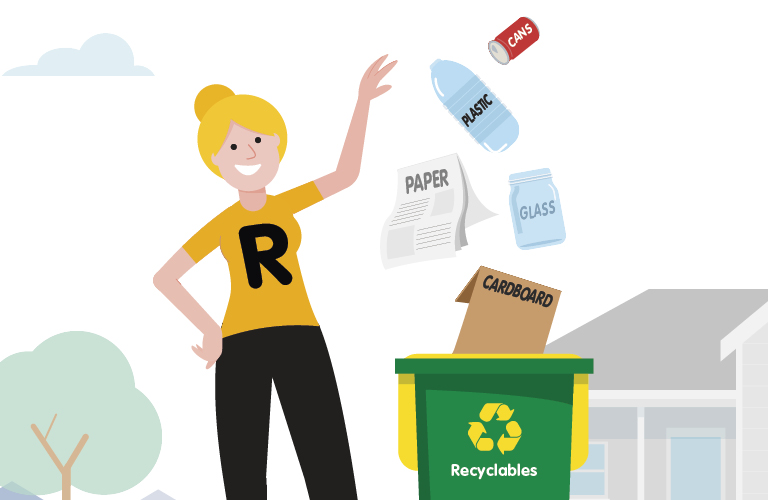
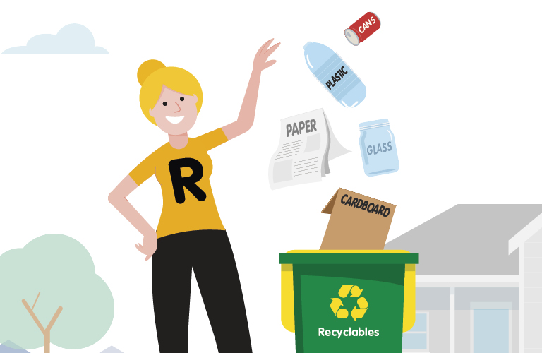

This one is a Producers Responsibility Organisation that helps you yield maximum benefits from your trash, and specialises in recycling all kinds of packaging waste. The pan-India service also makes recycled apparel, blankets and toys, majorly produced from their sustainably recycled PET bottles.
Founded in 2015, this organisation helps food chains and restaurants manage their waste at the source. They collect reject waste from the premises, provide data-driven feedback modules on proper segregation to staff, and ensure that the highest possible amount of waste is reused or recycled. Through their mobile app, which also has a tracking monitor, customers can understand the quality and quantity of their waste on user-friendly graphs. Till date, Good Food has diverted over 9,000 tonnes of waste from landfills.
Green Plastic connects waste-pickers to global markets, and helps brands switch to high-quality recycled plastic for packaging their goods. Their mobile app provides urban waste-pickers with access to fair market prices, and they are also slowly foraying into coastal communities to address the root cause of ocean plastic.
 
